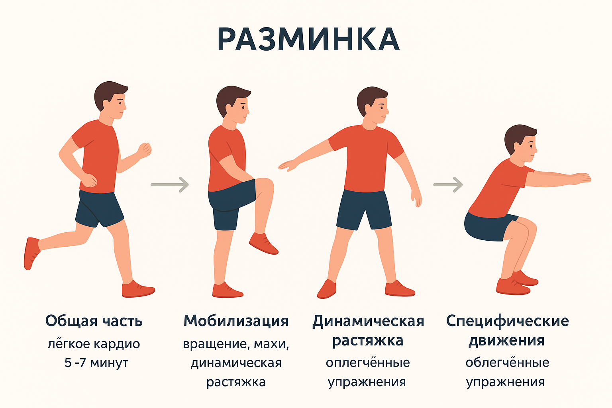
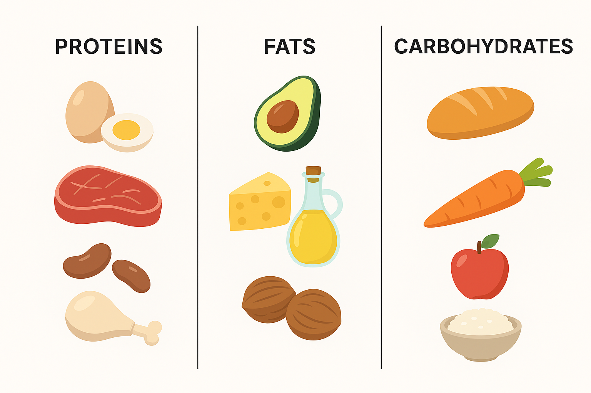

Momentum Bot
Дополнительная теория для чтения
Дополнительная теория для чтения
Регулярная физическая активность оказывает многокомпонентное влияние на организм. Аэробные нагрузки усиливают сократительную способность миокарда, увеличивают ударный объём сердца и стимулируют развитие капиллярной сети. Исследования показывают, что систематические тренировки повышают максимальное потребление кислорода (VO₂ max) — ключевой предиктор сердечно-сосудистого здоровья. Повышение VO₂ max на каждые 3,5 мл/кг/мин ассоциировано со снижением риска смертности на 10–15%.
Силовые тренировки способствуют мышечной гипертрофии за счёт активации механосенсорных путей mTOR, стимулирующих синтез мышечного белка. Метаанализы показывают, что тренировки сопротивления эффективно увеличивают мышечную массу и плотность костей, снижая риск остеопороза у взрослых и пожилых людей. Регулярная нагрузка также повышает чувствительность тканей к инсулину, что снижает риск метаболического синдрома и диабета 2 типа.
С точки зрения психологии, физическая активность усиливает выработку эндорфинов и нейротрансмиттеров (серотонина и дофамина), улучшая настроение и снижая тревожность. Крупные когортные исследования подтверждают связь между регулярными тренировками и снижением риска депрессии на 20–30%.
Таким образом, физическая активность оказывает мультифакторное влияние на здоровье — от улучшения телосложения до повышения когнитивных функций и продолжительности жизни.

Разминка представляет собой комплекс действий, направленных на постепенное повышение температуры мышц и улучшение нейромышечной координации. Повышение локальной температуры на 1–2 °C увеличивает скорость ферментативных реакций в мышечных волокнах, усиливая эффективность сокращений и снижая вязкость тканей.
Исследования демонстрируют, что динамическая разминка повышает мощность и силу в последующей тренировке на 3–7%.
Общий разогрев — лёгкие аэробные нагрузки увеличивают частоту сердечных сокращений, усиливают кровоток и повышают оксигенацию мышц.
Динамическая мобильность — активные движения суставов улучшают их подвижность и повышают амплитуду движений. Доказано, что динамическая растяжка перед тренировкой более эффективна, чем статическая, так как не снижает коллаборацию мышечных волокон и не уменьшает силу.
Специфическая часть — повторение движения, которое будет выполняться в тренировке (например, лёгкие приседания перед рабочими подходами). Это улучшает активацию моторных единиц и подготавливает центральную нервную систему к более высокой нагрузке.
Разминка снижает риск травм за счёт улучшения вязкоэластичных свойств связок, лучшего распределения синовиальной жидкости и оптимизации нейромышечного контроля.

Научно обоснованное спортивное питание предполагает адекватное потребление макронутриентов и соблюдение энергетического баланса. Белок играет ключевую роль в восстановлении мышц; современная литература рекомендует 1.6–2.2 г белка на кг массы тела для людей, регулярно занимающихся силовыми тренировками.
Исследования подтверждают, что оптимальное распределение приёмов белка — 3–4 раза в день по 0.3–0.4 г/кг за приём — усиливает синтез мышечного белка.
Углеводы служат основным субстратом для высокоинтенсивных нагрузок. Исчерпание запасов гликогена при интенсивных тренировках может достигать 40–60% за одну сессию. Восполнение углеводов после тренировки в течение 2 часов значительно ускоряет восстановление.
Специалисты рекомендуют потреблять 4–7 г углеводов на кг массы тела в зависимости от уровня активности.
Жиры необходимы для синтеза гормонов (включая тестостерон и кортизол) и поддержания структуры клеточных мембран. Омега-3 жирные кислоты уменьшают воспалительные процессы, улучшают чувствительность к инсулину и могут ускорять восстановление мышечных волокон.
Питание перед тренировкой рекомендуется за 1.5–2 часа и должно включать легкоусвояемые углеводы и умеренное количество белка. После тренировки предпочтительно сочетать белки и углеводы, чтобы активировать процессы восстановления.
Гидратация крайне важна: потеря 1–2% массы тела в виде жидкости уже снижает физическую производительность.
Сон является критически важным компонентом восстановления. Во время глубоких стадий сна наблюдается пик секреции гормона роста (somatotropin), который участвует в восстановлении и регенерации тканей.
Исследования показывают, что спортсмены, спящие менее 6 часов, имеют повышенный уровень кортизола, снижение силы и большую вероятность травм.
Восстановление между тренировками зависит от типа нагрузки:
Активное восстановление (лёгкое плавание, прогулки, стретчинг) улучшает кровоток и ускоряет выведение метаболитов. Научные данные указывают, что массаж и миофасциальный релиз могут уменьшать мышечную боль (DOMS) на 15–30%.
Эффективная тренировочная программа формируется на основе цели и научных принципов адаптации организма. Основной принцип — прогрессивная перегрузка, предполагающая постепенное увеличение интенсивности, объёма или сложности упражнений.
Научная литература подтверждает, что увеличение общего тренировочного объёма является ключевым фактором роста мышечной массы.
Силовые тренировки рекомендуется выполнять 2–4 раза в неделю, используя многосуставные движения, вовлекающие большие мышечные группы.
Оптимальный диапазон повторений для гипертрофии — 6–15, при усилии на уровне 65–85% от 1ПМ (одноповторного максимума).
Кардиотренировки развивают аэробную мощность и выносливость; метаанализы показывают, что интервальные тренировки эффективнее традиционного кардио для повышения VO₂ max.
Гибкость и мобильность следует тренировать ежедневно короткими сессиями. В плане необходимо учитывать периодизацию — чередование фаз интенсивности, что позволяет повышать работоспособность и снижать риск перегрузки.
Для новичков эффективна простая программа: две силовые тренировки всего тела в неделю, один день умеренного кардио и один день активного восстановления.
Понимание анатомии помогает корректно распределять нагрузку и выбирать упражнения, соответствующие физиологическим функциям мышц.
Например, грудные мышцы работают при горизонтальном приведении плеча; латеральная широчайшая мышца — при приведении и разгибании плеча; ягодичная мышца — главный разгибатель бедра и важный стабилизатор таза.
Мышцы делятся на тонические и фазические: первые склонны к укорочению (например, грудные и икроножные), вторые — к ослаблению (ягодичные, глубокие мышцы живота). Нарушение этого баланса увеличивает риск травм и ухудшает технику упражнений.
Суставы, такие как коленный и плечевой, требуют внимания к мышцам-стабилизаторам. Например, слабость средней ягодичной мышцы увеличивает вальгусное отклонение колена при приседаниях.
Исследования подтверждают, что укрепление стабилизаторов снижает риск травм коленного сустава у спортсменов.
Анатомическая грамотность помогает формировать сбалансированную программу, предотвращать мышечные дисбалансы и повышать безопасность тренировочного процесса.